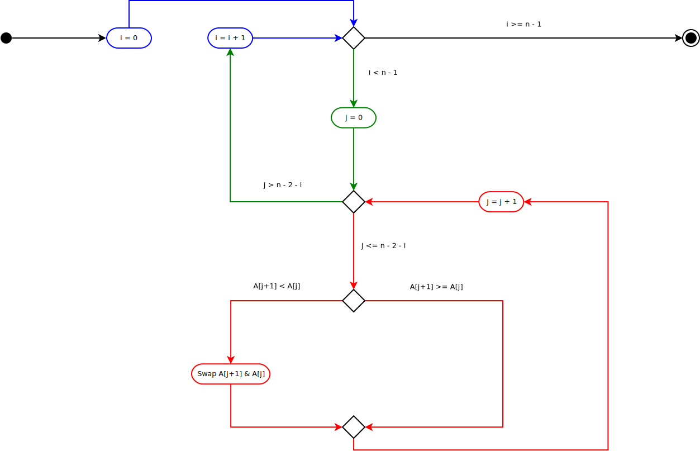

Bubble Sort: The Algorithm
Table of Contents
This is part of a series on the Bubble Sort. In this post we'll look at the algorithm without worrying about the implementation details.
\(\def\sc#1{\dosc#1\csod} \def\dosc#1#2\csod{{\rm #1{\small #2}}}\)
The Parts
- Specification: This is an instance of The Sorting Problem.
- Basic Steps: Swap adjacent elements that are out of order.
- Measure of Progress: The number of items sorted so far.
- The Loop Invariant: The number of times the loop has been performed (k) is the number of elements at the end of the items which are the largest elements in sorted order.
- Main Steps: Move from the start of the list swapping adjacent items that are out of order until the largest previously unsorted item is at the beginning of the sorted items.
- Make Progress: The main step reduces the unsorted by 1.
- Maintain the Loop Invariant:
- \(\langle Loop-Invariant \rangle\): k items at the end of the list are sorted.
- \(\lnot \langle Exit-Condition \rangle\): There is more than one item that is unsorted.
- \(\textsc{CodeLoop}\): The k+1 item was the largest of the unsorted items and is now at the beginning of the sorted items.
- Establish the Loop Invariant: Initially no items are swapped.
- Exit Condition: Stop when there is only one item in the unsorted items.
- Ending:
- \(\langle Exit-Condition \rangle\): All but the smallest item are in the upper list.
- \(\langle Loop-Invariant \rangle\): All the items in the upper list are sorted in non-decreasing order.
- \(\langle Post-Condition \rangle \): The list is sorted in non-decreasing order.
The Algorithm
Pseudocode
The Bubble Sort algorithm is a Brute-Force sort which works by repeatedly traversing the input array, checking adjacent values and swapping them if they are out of order. This has the effect of "bubbling-up" the largest unsorted value, thus the name, probably (see Astrachan, 2003 for some history on it). Here's the algorithm in pseudocode.
\begin{algorithm}
\caption{BubbleSort}
\begin{algorithmic}
\INPUT An array of orderable items
\OUTPUT The array sorted in ascending order
\PROCEDURE{BubbleSort}{$A$}
\FOR{$i \gets 0$ to $n - 2$}
\FOR{$j \gets 0$ to $n - 2 - i$}
\IF{$A[j+1] < A[j]$}
\STATE swap $A[j]$ and $A[j+1]$
\ENDIF
\ENDFOR
\ENDFOR
\ENDPROCEDURE
\end{algorithmic}
\end{algorithm}
If you squint a little you'll see that there's only really four lines of code, two for-loops, an if-then conditional, and a "swap", the rest is noise from the algorithmic formatting.
In translation, the \(i\) variable holds the amount of items at the end of the list that have been sorted so far, and the \(j\) variable moves from the start of the list up to the end of the unsorted (since the outer loop goes up by one each time and the inner loop is subtracting the outer loop's value when finding where to stop it goes up one less entry with each loop). Then the conditional says that if the item to the right of where we currently are is smaller than the item in front of us, swap the two items so that the bigger item is on the right.
Diagram

The three colors in the diagram represent:
- Blue: The outer for-loop
- Red: The inner for-loop
- Green: The transitioning to and from the inner loop to the outer loop.
A Simple Example
Let's step through how the Bubble Sort works with five items to sort.
- The Array To Sort: A = [4, 5, 2, 3, 1]
- n = 5
- n - 1 = 4
- n - 2 = 3
As a Table
| # Sorted | All Sorted? | Last Unsorted | Exit Inner Loop? | Swap? | ||||||
|---|---|---|---|---|---|---|---|---|---|---|
| i | i == n - 1 | n - 2 - i | j | j > n - 2 - i | A[j] | A[j + 1] | A[j] > A[j + 1] | A | ||
| 0 | \(\ne n - 1\) | 3 | \(\nless\) | 0 | 4 | < | 5 | 4, 5, 2, 3, 1 | ||
| \(\nless\) | 1 | 5 | > | 2 | Swap | 4, 2, 5, 3, 1 | ||||
| \(\nless\) | 2 | 5 | > | 3 | Swap | 4, 2, 3, 5, 1 | ||||
| \(\nless\) | 3 | 5 | > | 4 | Swap | 4, 2, 3, 1, 5 | ||||
| < | 4 | Exit Loop | ||||||||
| 1 | \(\ne n - 1\) | 2 | \(\nless\) | 0 | 4 | > | 2 | Swap | 2, 4, 3, 1, 5 | |
| \(\nless\) | 1 | 4 | > | 3 | Swap | 2, 3, 4, 1, 5 | ||||
| \(\nless\) | 2 | 4 | > | 1 | Swap | 2, 3, 1, 4, 5 | ||||
| < | 3 | Exit Loop | ||||||||
| 2 | \(\ne n - 1\) | 1 | \(\nless\) | 0 | 2 | < | 3 | 2, 3, 1, 4, 5 | ||
| \(\nless\) | 1 | 3 | > | 1 | Swap | 2, 1, 3, 4, 5 | ||||
| < | 2 | Exit Loop | ||||||||
| 3 | \(\ne n - 1\) | 0 | \(\nless\) | 0 | 2 | > | 1 | Swap | 1, 2, 3, 4, 5 | |
| < | 1 | Exit Loop | ||||||||
| 4 | \(== n - 1\) (Done) |
Some Column Notes:
- i is the count of items in the sorted section at the end of the array
- i == n - 1: When there's only one item left in the unsorted section there's nothing to swap so the array is sorted.
- n - 2 - i is the index of the item at the end of the unsorted section right before the sorted section of the array.
- j > n - 2 - i: When j moves into the already sorted section restart the inner loop.
- A[j] > A[j + 1]: If the item to the right of j is smaller than the item at j then swap them.
Assessing the Damage
Although it's nice to know that the sort works we're really not as concerned about how correct it is, as much as we are interested in how it performs. There's two things we can count:
- The Number of comparisons
- The Number of swaps.
The fact that you have those two loops makes it pretty likely that it's going to be \(\Theta\left(n^2\right)\) but since Bubble Sort is mostly an academic example let's work it out.
Comparisons
The number of comparisons is equal to the number of times the loops run, so we get \(\Theta\left(n^2\right)\). I made some notes on how I got that in this post.
Swaps
The number of swaps will depend on how the inputs are arranged, but in the worst case where the array is sorted backwards, every comparison will produce a swap so you'll end up with the same bounds as the comparisons.
\begin{align} S_{worst-case} &= C(n)\\ &= \frac{n^2 - n}{2} \in \Theta(n^2) \end{align}Onward
The next post will look at translating the algorithm to python.
Sources
- (Levitin, 2007) Introduction to the Design & Analysis of Algorithms (Levitin)
- (Astrachan, 2003) Bubble Sort: An Archeological Algorithmic Analysis